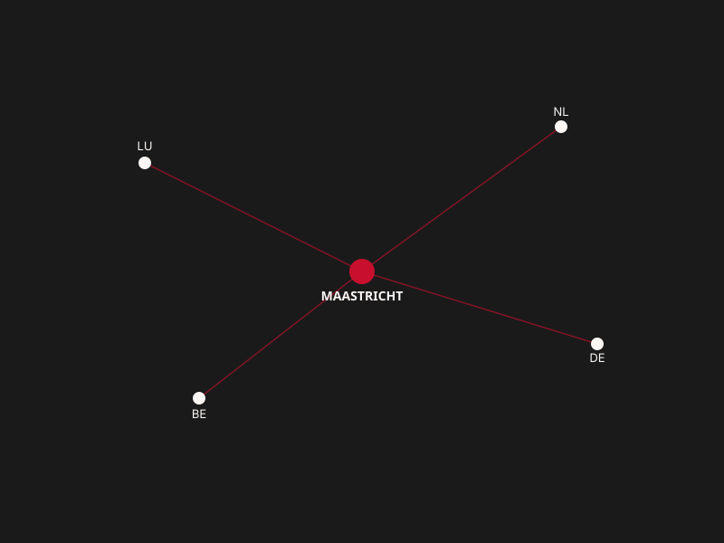

Maastricht is becoming Europe's next tech crossroads.
We're building the talent, community, and cross-border network that make Maastricht the hub connecting tech in the Netherlands, Germany, Belgium, and Luxembourg.
Why Maastricht
A small city with an outsized geographic advantage — and a community determined to use it.
Cross-Border Talent
Maastricht sits within an hour of Germany, Belgium, and a short drive from Luxembourg — a single tech community can draw from four countries at once.
Community-Driven
Every program is built with the people who show up to it — developers, students, founders, and companies shaping what the hub becomes.
Future-Ready Skills
From first line of code to senior engineering roles, our programs meet people where they are and help them grow toward where the region needs them.
Open & Inclusive
No matter your background, language, or starting point — if you want to build a tech career or company here, there's a place for you.
Programs
Practical ways to learn, connect, and grow — whether you're just starting out or scaling a company.
Meetups
Recurring local meetups and socials for developers and tech enthusiasts across South Limburg.
Learn more →Mentorship
Pairing experienced tech professionals with newcomers and career-switchers building their path.
Learn more →Workforce Training
Part-time, bootcamp-style upskilling programs designed around real regional hiring needs.
Learn more →Cross-Border Exchange
Joint programs and events with tech communities in Aachen, Liège, and Luxembourg City.
Learn more →One city, four countries within reach
Maastricht sits at the literal tri-border point of the Netherlands, Germany, and Belgium — with Luxembourg a short trip further south. That's not a footnote, it's the whole premise: a tech hub built to be genuinely regional from day one.
Explore the Regional Hub →
Upcoming Events
Come meet the community in person.
TechMaastricht Meetup
Lightning talks, networking, and drinks — first Thursday of every month.
Cross-Border Hackathon
A weekend build event with teams from Maastricht, Aachen, and Liège.
Regional Tech Summit
The hub's flagship event bringing together talent and employers from all four countries.
Ready to build Maastricht's tech future with us?
Whether you're a developer, a student, a founder, or a company hiring across the region — there's a way to plug in.
Get Involved